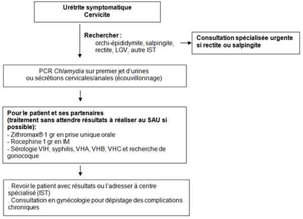

Bienvenue Sur Medical Education
Infections sexuellement transmissibles
Spécialité : genito-urinaire / infectieux /
Points importants
-
Première cause de maladie bactérienne sexuellement transmissible dans les pays développés (10 à 20% de la population mondiale est infectée)
-
Infections urogénitales pauci-symptomatiques chez l'homme (urétrite, épididymites) et chez la femme (cervicite, rarement urétrite, salpingite)
-
Epidémies récentes de lymphogranulomatose vénérienne ou LGV (sérovars particuliers : L1, L2, L3), chez des homosexuels masculins infectés par le VIH.
-
Complications chroniques graves : stérilité féminine ou grossesses ectopiques, fistules ou sténoses rectales.
-
Arthrites réactionnelles à Chlamydia : première cause d'arthrites réactionnelles, 80% des sujets sont porteurs du HLA B27.
-
Le diagnostic repose actuellement sur la recherche de Chlamydia trachomatis par PCR sur premier jet d'urines.
-
Traitement des infections non compliquées : azithromycine monodose, à toujours associer au traitement d'une gonococcie éventuelle.
-
Dépistage et traitement systématique des partenaires
-
Dépistage systématique des autres infections sexuellement transmissibles (VIH, syphilis, gonococcie) et une recherche de complications chroniques, notamment chez la femme.
Présentation clinique / CIMU
SIGNES FONCTIONNELS
Présentation clinique / CIMU
SIGNES FONCTIONNELS
Généraux
- Fièvre en cas de salpingite chez la femme, d'épididymite ou de rectite mais elle est rare
Spécifiques
-
Cervicite chez la femme :
- leucorrhées en général blanches et peu abondantes, difficiles à différencier des leucorrhées physiologiques
-
Urétrite chez l'homme :
- installation subaiguë en 8 jours de brûlures mictionnelles ou urétrales peu intenses, avec écoulement trouble non purulent (« goutte matinale »)
-
Rectite :
- prurit anal, écoulement muqueux puis muco-purulent, ténesme et douleur rectale. Constipation peut être associée
-
Epididymite :
- unilatérale, sans fièvre, avec augmentation de volume de l'épididyme, rarement orchite associée.
-
Lymphogranulomatose vénérienne (LGV) :
- rectite isolée dans plus de 80% des cas avec symptômes importants : douleur rectale, ténesme, parfois rectorragies.
- symptômes urogénitaux, peuvent s'associer à la rectite, plus rarement isolés: ulcération génitale, urétrite avec dysurie ou écoulement urétral.
- présence d'une adénopathie inguinale dans 50% des cas des atteintes génitales.
-
Atteinte inflammatoire pelvienne : salpingite / endométrite :
- présentation aiguë rare avec douleurs pelviennes et fièvre, pouvant s'associer exceptionnellement à une péri-hépatite (syndrome de Fitz-Hugh-Curtis) avec hépatalgie voire ascite.
- douleurs pelviennes, dyspareunies, irrégularités menstruelles, métrorragies en cas d'atteinte subaiguë ou chronique.
- diagnostic possible au cours d'investigations pour infertilité.
-
Conjonctivite :
- sensation de corps étranger et hyperhémie conjonctivale, d'écoulement purulent à un stade précoce.
-
Arthrite réactionnelle :
- complication inflammatoire rare (1%) des infections urogénitales, essentiellement chez les hommes (mais possible chez les femmes)
- le syndrome complet, syndrome de Fiessinger-Leroy-Reiter, (1/3 des cas) associe arthralgies, lésions cutanées, conjonctivite/uvéite et urétrite.
- ce tableau le plus fréquent est une poly-arthralgie fébrile, avec arthralgies asymétriques et prédominant aux membres inférieurs.
CONTEXTE
Terrain
- Adulte jeune
- Homosexuels masculins (LGV)
Antécedents
- Rechercher des ATCD d'autres infections sexuellement transmissibles (IST)
Facteurs de risque
- Age < 25 ans
- Partenaires multiples
- Rapports non protégés
- Infection par le VIH pour la LGV.
EXAMEN CLINIQUE
- L'examen clinique général est pauvre, le diagnostic des infections non compliquées à Chlamydia trachomatis est fait en général lors d'un dépistage systématique.
Cervicite
- Leucorrhées mucoïdes claires et inodores au niveau du col à l'examen gynécologique
- Pas d'atteinte vaginale (en cas de vaginite : co-infection ou autre diagnostic)
Urétrite
- Ecoulement trouble non purulent
- Pas d'autre atteinte associée : pas d'adénopathie ni d'ulcération
Orchite, épididymite
- Unilatérale, douloureuse
LGV
- Ecoulement muco-purulent avec des ulcérations rectales ou sigmoïdiennes parfois hémorragiques ou compliquées d'abcès
- Exceptionnellement, atteintes pseudo-tumorales
- Ulcération génitale rare, indolore
- Adénopathie inguinale en isolée et inflammatoire, pouvant se fistuliser en cas d'évolution chronique
Atteinte inflammatoire pelvienne
- Si atteinte aiguë : douleur pelvienne ou abdominale réveillée par la palpation
- Si atteinte chronique : l'examen clinique est normal
Arthrite réactionnelle
- Tableau isolé d'oligoarthrite peu inflammatoire avec fièvre
- Atteinte axiale
- Entésopathies (tendon d'Achille ++)
- Uvéite bilatérale (oeil rouge et douloureux)
Conjonctivite
- Unilatérale et liée à une inoculation directe avec sensation de corps étranger, hyperhémie conjonctivale écoulement purulent
- Rarement isolée, en général satellite d'une infection génitale
EXAMENS PARACLINIQUES SIMPLES
- Pas d'anomalie particulière
CIMU
-
Tri 2 à 3
Signes paracliniques
-
Pas d'anomalie biologique particulière dans les atteintes uro-génitales non compliquées
-
Syndrome inflammatoire en cas d'atteinte inflammatoire pelvienne ou d'arthrite réactionnelle.
-
Rechercher HLA B27et bilan auto-immun dans le cadre des arthrites réactionnelles (pas dans le contexte de la prise encharge au SAU).
Diagnostic étiologique
Diagnostic étiologique
Mise en évidence de Chlamydia trachomatis par PCR
Premier jet d'urines
- C'est l'examen essentiel pour le diagnostic des urétrites à Chlamydia
Autres sécrétions
- Les sécrétions cervicales recueillies lors de l'examen gynécologique ou proctologique (on peut réaliser écouvillonnage « à l'aveugle » au SAU)
- Biopsie d'adénopathie ou dans le liquide articulaire
Pas d'intérêt à la réalisation de sérologies Chlamydia ni d'écouvillonnage urétral chez l'homme
Diagnostic différentiel
-
Urétrite, rectite : gonococcie
-
Ulcération génitale/anale : chancre syphilitique, herpès
-
Cervicite : gonococcie, Trichomonas vaginalis (en général, vaginite associée)
-
Arthrite réactionnelle : autres causes de spondylarthropathie liées à HLA B27 ; gonococcie en cas de monoarthrite
-
Salpingites aiguës bactériennes
Traitement
TRAITEMENT HOSPITALIER
-
Traitement symptomatique par antalgiques en cas de douleurs pelviennes chroniques, arthralgies
-
En cas de menace vitale avec complications d'une grossesse ectopique (GEU): stabilisation de la patiente, perfusion pour remplissage et transfert en chirurgie
TRAITEMENT MEDICAMENTEUX
Traitement
TRAITEMENT HOSPITALIER
- Traitement symptomatique par antalgiques en cas de douleurs pelviennes chroniques, arthralgies
- En cas de menace vitale avec complications d'une grossesse ectopique (GEU): stabilisation de la patiente, perfusion pour remplissage et transfert en chirurgie
TRAITEMENT MEDICAMENTEUX
Le traitement comprend le traitement du patient et des partenaires
Cervicite, urétrite, rectite (hors LGV) non compliquées (et conjonctivite)
- Traitement minute par monodose d'azithromycine = Zithromax® monodose 1g
- A privilégier en raison de sa simplicité (et utilisable chez la femme enceinte)
- Alternatives : Doxycycline 100 mgx2/j pendant 7 jours, ofloxacine 200mg x2/j pendant 7 jours
-
Toujours associer le traitement « minute » d'une gonococcie :
- ceftriaxone = Rocéphine® 1g en IM
- alternative : quinolone en prise unique = Monoflocet® 400 mg en une prise ou Uniflox® 250 mg en une prise unique
- Cas particulier de la femme enceinte : les macrolides (azithromycine) peuvent être utilisés pendant la grossesse
- Il faut toujours réaliser un prélèvement de contrôle
Atteinte inflammatoire pelvienne de la femme, LGV
- Traitement 21 jours par doxycycline 100 mgx2/j
- Alternatives : ofloxacine 200mg x2/j pendant 21 jours
- Dans les salpingites aiguës, on associe un traitement par ceftriaxone 1 g/j en IM et métronidazole 500 mgx2/j pendant toute la durée du traitement.
Orchi-épididymite
- Doxycycline 100 mgx2/j pendant 14 jours
- Alternatives : ofloxacine 200mg x2/j pendant 14 jours
Arthrite réactionnelle
- Le traitement de l'urétrite, cervicite ou d'une autre atteinte doit être réalisé
-
Il n'y a pas d'indication à prolonger l'antibiothérapie au long cours car cela n'altère pas l'évolution de l'arthropathie
Surveillance
-
Pas de surveillance spécifique sauf chez la femme enceinte (s'assurer de la négativation des prélèvements)
Devenir / orientation
CRITERES D'ADMISSION
-
Seul le traitement des formes compliquées chroniques ou des arthrites réactionnelles peut nécessiter une hospitalisation
-
En cas de suspicion de rectite ou de salpingite aiguë, orienter le patient vers une consultation aux urgences de gynécologie ou proctologie
Devenir / orientation
CRITERES D'ADMISSION
- Seul le traitement des formes compliquées chroniques ou des arthrites réactionnelles peut nécessiter une hospitalisation
- En cas de suspicion de rectite ou de salpingite aiguë, orienter le patient vers une consultation aux urgences de gynécologie ou proctologie
Hospitalisation rarement nécessaire
- En cas d'atteinte très symptomatique avec retentissement général ou très douloureux (rectite ulcérée, atteinte fébrile avec arthropathie, salpingite...): orienter le patient selon le type d'atteinte, de préférence en gynécologie, gastro-entérologie
- En cas d'arthropathie : orientation vers les services d'infectiologie, rhumatologie ou médecine interne
ORDONNANCE DE SORTIE
-
Ordonnance de sortie pour le patient et son (ses) partenaire(s) :
- Zithromax® 1 g en une prise unique orale
- Rocéphine® 1 g en IM à associer systématiquement pour traiter une éventuelle gonococcie associée (l'injection pourra être réalisée aux urgences)
RECOMMANDATIONS DE SORTIE
Consultation en gynécologie à recommander à toutes les femmes
Dépistage systématique des autres IST
- Remettre au patient une ordonnance pour faire réaliser : sérologie VIH, syphilis, hépatite B, hépatite C, hépatite A (transmission sexuelle possible chez les homosexuels masculins)
- Proposer une consultation de proctologie pour les patients homosexuels masculins pour un dépistage de condylomes
- Orienter le patient vers une consultation dans un centre de dépistage anonyme et gratuit (anonymat ) ou vers une consultation spécialisée de Maladies Infectieuses.
-
Le patient doit être revu avec les résultats des sérologies (VIH, ...) +++
Mécanisme / description
-
Transmission strictement interhumaine
-
2 biovars ; 15 sérovars dont sérovars L1, L2 et L3 responsables de la LGV et 12 autres sérovars des atteintes oculo-génitales
-
Pathogénicité mal connue car bactérie intracellulaire, non cultivable
-
Absence d'immunité naturelle protectrice
-
Tropisme = cellules des épithéliums génitaux et oculaires.
-
Lésions inflammatoires avec initialement infiltrat lymphoplasmocytaire évoluant vers la fibrose (séquelles rétractiles et complications)
-
Arthrites réactionnelles : rôle déclencheur de Chlamydia dans phénomènes d'auto-immunité (HLA B27)
Algorithme
-
Prise en charge des infections urogénitales non compliquées à Chlamydia
Algorithme
- Prise en charge des infections urogénitales non compliquées à Chlamydia
 _24 Algorithme Algorithme : infections urogénitales non compliquées à Chlamydia
Bibliographie
-
Jones RB, Batteiger BE. Chlamydia trachomatis. Principles and Practice of Infectious Diseases. Fifth edition. Mandell GL.Vol.2 p1989-2004.
-
Geisler WM. Management of uncomplicated Chlamydia trachomatis infections in Adolescents and Adults: evidence Reviewed for the 2006 Centers for Disease Control and Pervention Sexually transmitted diseases Treatment Guidelines. Clin Infect Dis 2007; 44:s77-83.
-
Lymphogranuloma Venerum in the United Kingdom. Clin Infect Dis 2007;44:26-32.
Auteur(s) : Nathalie DE CASTRO